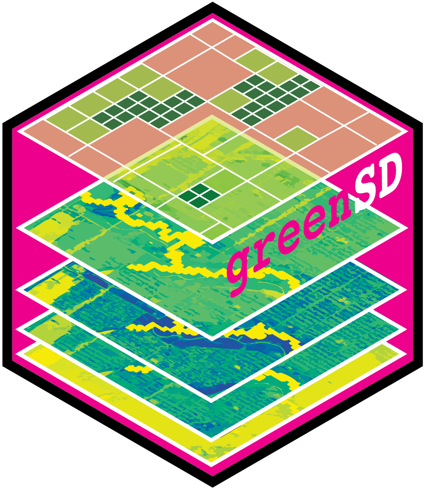

Package index
-
check_available_urban() - Get all of the urban areas in the Greenspace Seasonality Data Cube
-
check_urban_boundary() - Get an urban area boundary based on the UID
-
compute_exposure() - exposure
-
compute_morphology() - compute_morphology
-
get_band_index_by_time() - Get band index based on time period
-
get_esa_wc() - Download landcover or NDVI Data from ESA WorldCover 10m Annual Dataset
-
get_gsdc() - Download Greenspace Seasonality Data Cube
-
get_s2a_ndvi() - Retrieve Sentinel-2-l2a images to compute NDVI
-
get_tile_green() - Classify greenspace based on map tile images
-
lc_sem_seg() - Classify land cover based on multi-source imagery datasets
-
ndvi_to_sem() - ndvi_to_sem
-
sample_values() - Sample greenspace-realted data from Greenspace Seasonality Data Cube, ESA WorldCover 10m Annual Composites Dataset, or Sentinel-2-l2a images.
-
to_gif() - Convert A Multi-layer Raster to GIF